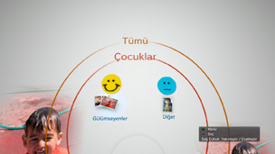
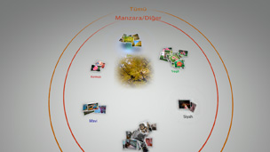

Fotoğrafları organize etme
Fotoğrafları gruplama
Etkinlikleri seçebilir ve sonra aşağıda açıklanan seçeneklerden birini kullanarak bu seçili etkinlikler içinde fotoğrafları gruplayabilirsiniz. Gruplamak istediğiniz fotoğrafları içeren etkinlikleri seçin,  düğmesine basın ve sonra
düğmesine basın ve sonra  (Grupla) öğesini seçin. Gruplanan fotoğrafların sayısını daraltmak istiyorsanız, gruplamak istediğiniz fotoğrafları içeren bir veya birkaç grup seçin ve sonra fotoğrafları gruplandırmak için (Grupla) altındaki başka bir seçeneği kullanın.
(Grupla) öğesini seçin. Gruplanan fotoğrafların sayısını daraltmak istiyorsanız, gruplamak istediğiniz fotoğrafları içeren bir veya birkaç grup seçin ve sonra fotoğrafları gruplandırmak için (Grupla) altındaki başka bir seçeneği kullanın.
| Tarih / Saat | Fotoğrafların çekildikleri tarih ve saate göre gruplar. |
|---|---|
| Kişi Sayısı | Fotoğraflardaki kişi sayısına göre gruplar. |
| Yaş Grubu | Fotoğraflardaki kişilerin göreli yaşına göre gruplar. |
| Yüz İfadesi | Fotoğraflardaki kişilerin yüz ifadelerine göre gruplar. |
| Renk | Fotoğraflarda görünen renklere göre gruplar. |
| Kamera Türü | Fotoğraf çekmek için kullanılan fotoğraf makinesi modeline göre gruplar. |
| Oyun | Oyun başlığına göre gruplar. |
| Albüm | XMB™ ekranında  (Fotoğraf) altında oluşturulan albüme göre gruplar. (Fotoğraf) altında oluşturulan albüme göre gruplar. |
İpuçları
- [Tümünü Seç] ile [Kütüphane Alanı] içindeki tüm fotoğraflar seçtiğiniz seçeneğe göre gruplanacaktır.
- Gruplama fotoğrafların analizine göre yapılır ve bazı durumlarda sonuçlar beklendiği gibi olmayabilir.
- Gruplanan fotoğraflardan bir oynatma listesi oluşturabilirsiniz.
Gruplanan fotoğraflara örnekler: Gülümseyen çocukların fotoğrafları
1. |
|
|---|---|
2. |
[Çocuklar] etiketli grubu seçin ve sonra |
3. |
 |
Gruplanan fotoğraflara örnekler: Mavi gökyüzü gösteren fotoğraflar
1. |
|
|---|---|
2. |
[Manzara/Diğer] etiketli grubu seçin ve sonra |
3. |
 |
Fotoğrafları silme
Bir fotoğraf veya albüm silmek için, fotoğraf veya albümü seçin, düğmesine basın ve sonra  (Sil) öğesini seçin.
(Sil) öğesini seçin.
İpucu
[Kütüphane Alanı] içindeki fotoğrafları silerseniz, fotoğraflar PS3™ sisteminin sistem depolama alanından da silinir.